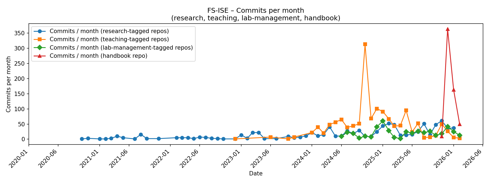

---
displayMode: compact
---
gantt
title First half – SuSe 2026
dateFormat YYYY-MM-DD
todayMarker stroke-width:5px,stroke:red,opacity:0.8
axisFormat %b
tickInterval 1month
section Team
Starter 🚀 :milestone, 2026-01-10, milestone
section Research
Focus :a2, 2026-01-10, 70d
section Teaching
Lectures SuSe 2026 :s1, 2026-03-23, 2026-05-21
Statement
Vision
Digital technologies drive fundamental transformation processes and create new possibilities in the organization and design of work. We aim to create a future where work is not only more productive and intelligent but also aligned with human values.
Mission
We strive to:
- Investigate the futures of work: Conduct research within the context of digital work, exploring digital work practices, distributed organizing, and knowledge synthesis.
- Collaborate: Translate research findings into actionable insights while building partnerships with academic institutions, communities, and industry leaders.
- Educate: Provide high-quality, innovative education that equips knowledge workers with the skills to navigate and shape the digital landscape responsibly.
- Design: Advocate for the design of work environments that prioritize human-centric approaches and ethical considerations, ensuring that technological advancements benefit both organizations and their employees.
Values
Our core values are:
🚀 Impact in research, teaching, and practice
We challenge ourselves every day to make significant contributions to research on digital work, inspiring students in different teaching formats, and facilitating the application of our work in practice.
🛠️ Rigor, reliability, and reproducibility
We value rigorous methods that are based on evidence and yield reproducible results. To this end, we select reliable tools and standard operating principles.
♻️ Continuous improvement, openness, sustainability
We aim to make our work processes, continuous improvement efforts, and outcomes openly accessible. In particular, we prefer open-source over proprietary technology.
🙏 Participation, support, and diversity
We build a culture of support, encouraging the participation of different stakeholders, including current and former team members, students, and colleagues. We make diversity our strength.
🧑🎓️ Learning
We believe in continuous growth, setting aside time to learn on a regular basis, and curating helpful resources.
NoteHow we implement the values and goals
- What we emphasize during onboarding
- All of our teaching efforts follow the plan-do-check-adjust cycle. Our teaching evaluations and improvements are available publicly.
- We choose a rigorous manuscript production system, based on Git and Markdown. This allows us to involve students and research assistants in our most important projects, giving them the opportunity to learn and contribute from day one. Without the transparent versioning, reliable control, and effective contribution mechanisms of Git, we would probably “protect the manuscript” and restrict access to our work (e.g., when working with Word).
We pursue goals in the following areas:
Annual cadence
We organize our work in a cadence of first half and second half of the year, starting with the starter and mid-year planning and review session.
---
displayMode: compact
---
gantt
title Second half – WiSe 2025/26
dateFormat YYYY-MM-DD
todayMarker stroke-width:5px,stroke:red,opacity:0.8
axisFormat %b
tickInterval 1month
section Team
Mid-year 🎯 :milestone, 2025-06-01, milestone
section Research
Focus :a2, 2025-06-01, 90d
section Teaching
Lectures WiSe 25/26 :w2, 2025-09-01, 2025-12-12
The agenda and meeting notes will be entered/linked here (along with links to our strategic / JF agenda)
NoteDates of the review and planning sessions
- First half: January 10
- Second half: June 01
North-star metric: Regular commits
We track our progress through incremental, high-quality contributions to our repositories.
The number of commits across our work areas serves as our north-star indicator of daily progress, learning, and improvement.
This metric reinforces how we work:
- Frequent delivery → steady momentum instead of waiting for “big drops”
- Transparency → visible progress enables us to offer guidance and support
- Team inclusion → everyone can see changes and contribute early and often
- Quality focus → commits reflect considered and valuable improvements
Deep thinking, reading, sketching, and discussion often happen away from the keyboard — on paper, whiteboards, in conversations, or during walks. We deeply value this form of intellectual work.
A commit marks the point where insights are externalized: captured in notes, papers, code, issues, or teaching materials that are recorded, versioned, and shared.
It is not a measure of effort, but a signal that thinking has been made durable and available to others — without this step, its value remains limited.
